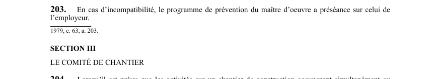

art-203-LSST : préséance programme maître oeuvre
Un article du wiki ⚖️ Recueil législatif
En bref
En cas d'incompatibilité, le programme de prévention du maître d'oeuvre a préséance sur celui de l'employeur. Cette obligation vise le maître d'œuvre et les employeurs.
🌐 LegisQuébec · 📄 PDF officiel (page 57)
Texte officiel : capture du PDF

Toucher l'image pour l'agrandir🔗 Ouvrir a cette page : LSST.pdf : page 57 · texte a jour au 26 mars 2024
Voir aussi
- art. 201 : modification programme Commission · faculté : la Commission peut ordonner que le contenu d'un programme de prévention soit modifié ou qu'un nouveau programme lui soit soumis dans le délai qu'elle détermine.
- art. 202 : engagement écrit employeur programme · obligation : le maître d'oeuvre doit faire en sorte qu'un employeur oeuvrant sur un chantier où un programme de prévention est mis en application s'engage par écrit à le faire respecter.
- art. 204 : formation comité chantier vingt travailleurs · obligation : lorsqu'il est prévu que les activités sur un chantier occuperont simultanément au moins 20 travailleurs de la construction, le maître d'oeuvre doit former un comité de chantier dès le début des travaux.
- art. 205 : composition comité chantier · le comité de chantier est composé du coordonnateur en santé et en sécurité ou d'un représentant du maître d'oeuvre, d'un représentant de chacun des employeurs, du représentant en santé et en sécurité.
- 🔧 Modifié par : LMRSST · Article modificateur de la LMRSST.
- ↑ Loi : LSST
Pages qui pointent ici (5)
- art-201-LSST : modification programme Commission Recueil législatif
- art-202-LSST : engagement écrit employeur programme Recueil législatif
- art-204-LSST : formation comité chantier vingt travailleurs Recueil législatif
- art-205-LSST : composition comité chantier Recueil législatif
- art-219-LMRSST : modifie l'art. 203 LSST Recueil législatif